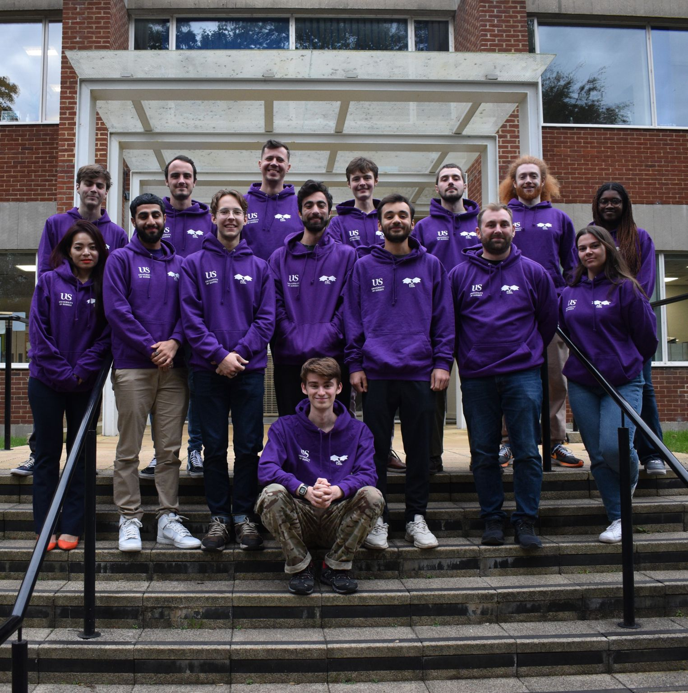
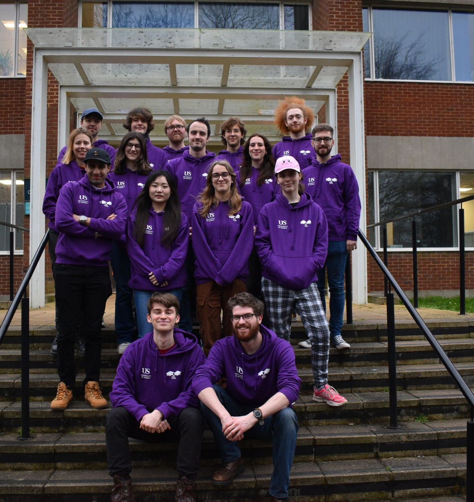
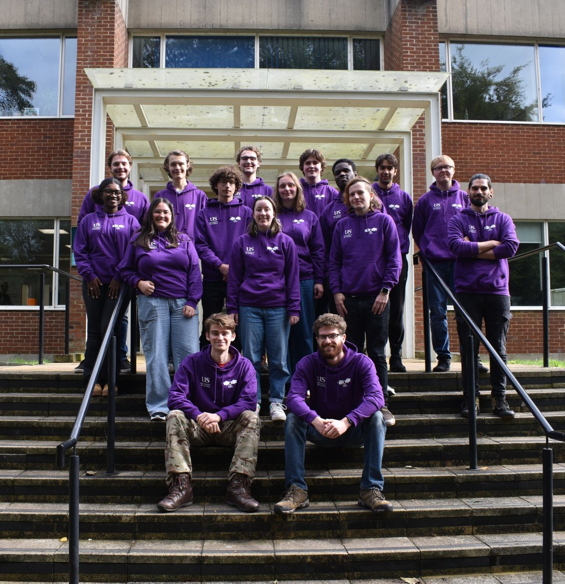
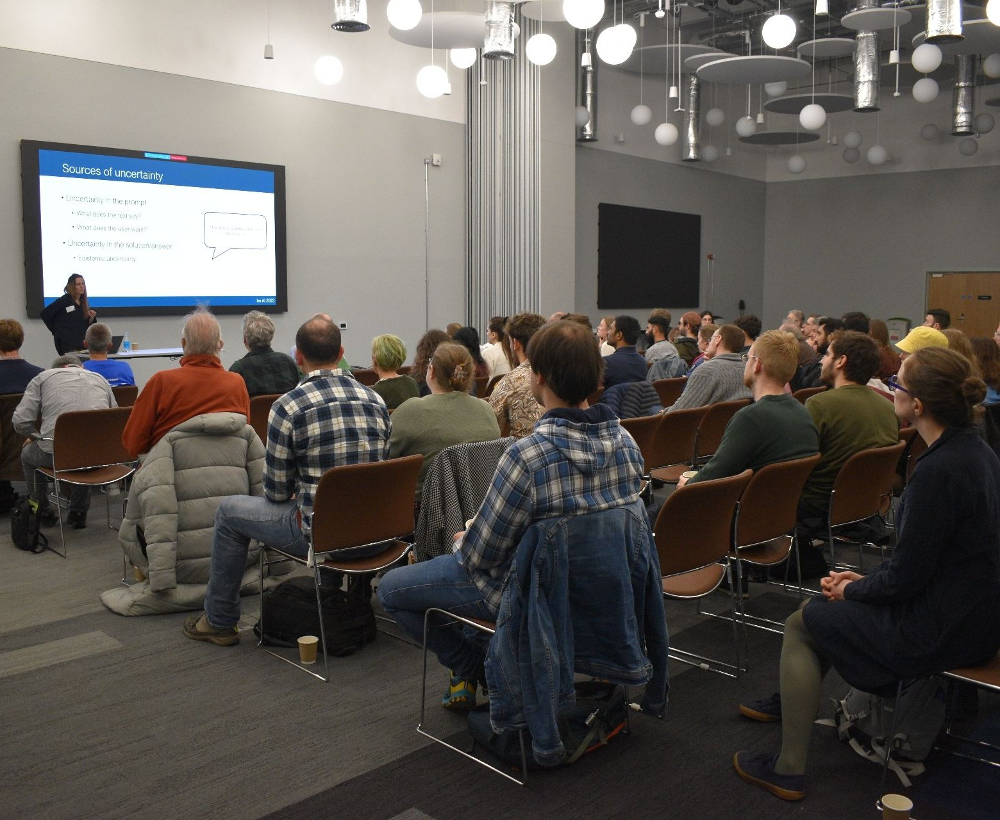
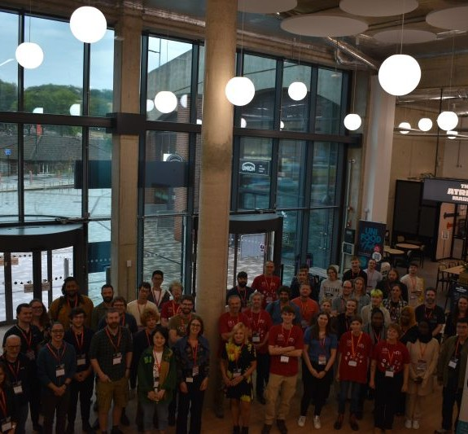

Academic Positions
Peer Assisted Learning Scheme Lead
The University of Sussex has a mentoring scheme where undergraduates support other undergraduates by offering support sessions and workshops. I spent two years of my undergraduate as a mentor, delivering drop in sessions and extra study workshops. As I became a post grad I was appointed PAL Leader, spending three years leading the coordination and delivery of PAL sessionsand workshops for supporting and mentoring both student mentors and participants to create an inclusive, collaborative learning environment. I was responsible for directing the teaching strategy, guiding mentors in effective facilitation techniques, and ensuring that students were able to engage confidently with challenging academic material. In this leadership role, I helped strengthen the sense of academic community within the university by promoting peer-to-peer support to other departments and universities, growing the size of the scheme and number of workshops offered, and advancing our digital strategy to better reach more students. We provided employment over the summer for students, working on YouTube support material and worksheets that students could use as revision material.


Senior Doctoral Tutor
I spent four years as a teaching assistant across several modules, with one of my proudest contributions being to Acquired Intelligence and Adaptive Behaviour (AIAB). This module’s practical labs focus on using evolutionary strategies to solve tasks, while giving students an introduction to robotics in both simulation and the real world. It is also the first opportunity students have to guide their own research and begin exploring topics they find personally interesting. As part of my contribution, I helped modernise the coursework by replacing the original LEGO Mindstorms platform with bespoke Braitenberg robots, designed to support sim-to-real transfer through evolutionary strategies. I led the design and prototyping of these robots, then coordinated the construction of 200 units for student use in the module. Each year, I also led laboratory sessions, delivered a robotics lecture, and trained other doctoral tutors to manage and support the robot platform effectively. See GitHub...Conference Committees
In 2023 I was part of the running of the be.AI conference which was hosted at the University of Sussex. The be.AI conference is an interdisciplinary conference for AI research spanding from computational neuroscience and robotics to philosphy and music. This conference not only had internal speakers, but also external speakers from around Europe to share ideas across this broad church of AI.
I founded the MPIE (maths, physics, informatics and engineering) conference and sat on it as committee co-chair, which brought together many different disciplines from across faculties. The conference has become a yearly event with oral presentations, panels and posters.
